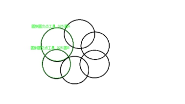
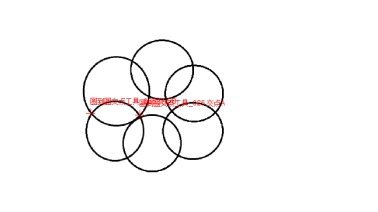
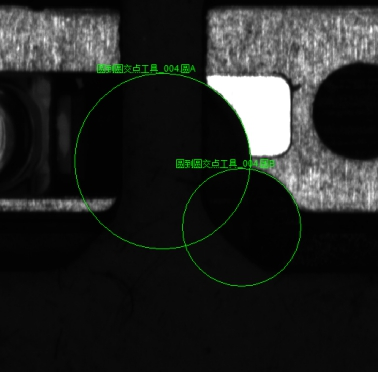

圆到圆交点工具主要用来计算输入图像中圆与圆之间的交点，并输出交点坐标。
 
| 分类 | 参数名称 | 参数描述 |
|---|---|---|
| 属性窗口 | 无 | 无 |
| 图像窗口 | 输入图像 | 显示待检测的图像。 |
| 数据链 | 输入图像 | 输入图像宽度、高度、像素大小，同图像窗口的输入图像参数。 |
| 圆A | 将要求交点的第一个圆。 | |
| 圆B | 将要求交点的第二个圆。 | |
| 高级界面 | 无 | 无 |
| 分类 | 参数名称 | 参数描述 |
|---|---|---|
| 监视窗口 | 输入图像 | 输出图像宽度、高度、像素大小。 |
| 交点A | 圆A与圆B的第一个交点图像坐标。 | |
| 交点B | 圆A与圆B的第二个交点图像坐标。 | |
| 执行结果 | 工具执行结果。 | |
| 执行时间 | 工具执行时间。 | |
| 图像窗口 | 输入图像 | 显示工具执行结果图像，同监视窗口的输入图像参数。 |
| 交点A | 圆A与圆B的第一个交点图像坐标。 | |
| 交点B | 圆A与圆B的第二个交点图像坐标。 | |
| 执行结果 | 显示工具执行结果，执行成功显示“OK”，执行失败显示“NG”，同监视窗口的执行结果参数。 | |
| 数据链 | 交点A | 圆A与圆B的第一个交点图像坐标，供后序工具使用，同监视窗口的交点A参数。 |
| 交点B | 圆A与圆B的第二个交点图像坐标，供后序工具使用，同监视窗口的交点B参数。 |
无
圆与圆无交点时，工具执行失败。
当数据链窗口中没有指定圆参数来源时，圆由图像窗口的圆的GUI确定；当数据链窗口中已经指定圆参数来源时，以该参数来源为优先，图像窗口圆GUI确定的圆无效。
如果圆由图像窗口的圆的GUI确定，则每次打开工程时需重新确定圆。
数据链中圆A与圆B的参数来源，既可以是完整的圆，也可以是圆弧（如图2 所示）所在的圆。

参见“\Samples\形状间距及相关点.gvp”。